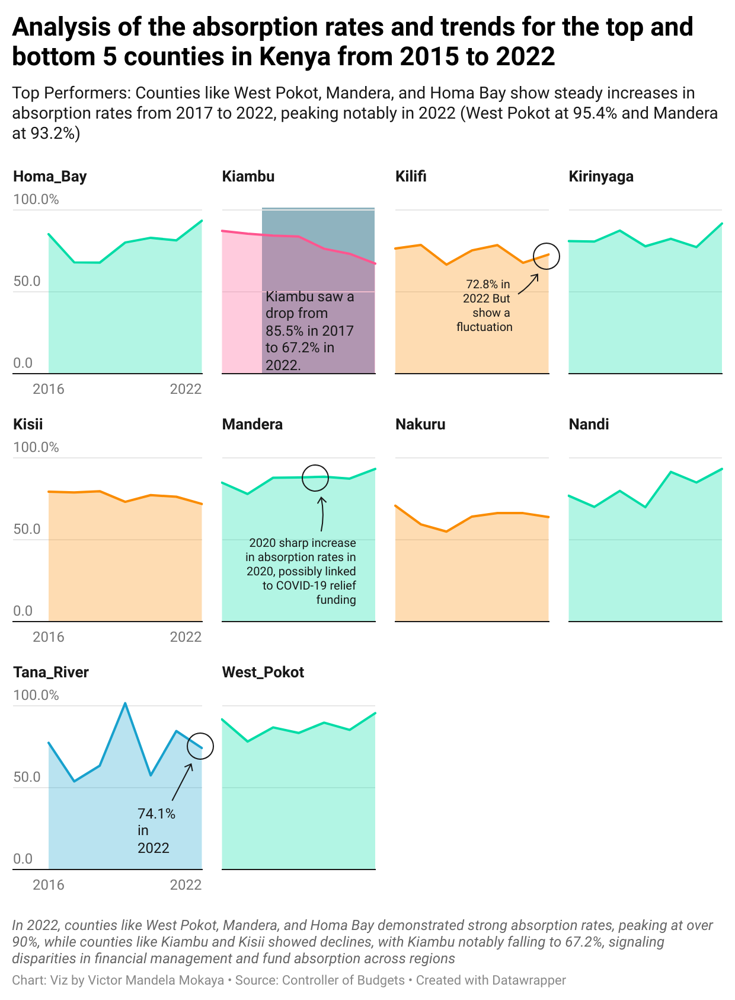

Introduction to Key Terms
In the context of Kenya’s healthcare sector, absorption rate refers to the percentage of allocated funds that a county effectively uses for its intended purposes. A higher absorption rate indicates efficient utilization of resources, while lower rates may suggest inefficiency or mismanagement. Monitoring absorption rates is crucial for understanding the performance of local governments in implementing healthcare projects and services.
Literature Review
Studies have shown that counties with higher absorption rates are often more effective in improving public health outcomes due to efficient fund allocation and management. According to research by the Controller of Budget, counties such as Mandera and West Pokot have demonstrated impressive absorption rates, while others like Kiambu and Kisii have struggled with lower utilization of funds (Controller of Budget, 2022). These disparities highlight a need for deeper analysis into what factors drive or hinder effective fund absorption across the regions.
Methodology
In this analysis, I compiled data from the Controller of Budget’s website for the years 2015 to 2022, focusing on the healthcare budget allocations and absorption rates for Kenya’s 47 counties. Using this data, I created a time series visualization that tracks the absorption rates of the top 5 and bottom 5 counties in 2022.
Data Table and Visualization
The table below summarizes the absorption rates for counties with the highest and lowest rates as of 2022:
| County | Absorption Rate (2022) | 2015 | 2016 | 2017 | 2018 | 2019 | 2020 | 2021 | 2022 |
|---|---|---|---|---|---|---|---|---|---|
| West Pokot | 95.4% | 114.74 | 91.6 | 78.1 | 86.7 | 83.3 | 89.6 | 85.2 | 95.4 |
| Mandera | 93.2% | 77.4 | 84.8 | 77.9 | 87.8 | 88.0 | 88.4 | 87.3 | 93.2 |
| Homa Bay | 93.4% | 128.84 | 85.2 | 68.0 | 67.8 | 80.1 | 83.0 | 81.4 | 93.4 |
| Nakuru | 93.2% | 159.55 | 70.7 | 59.3 | 54.9 | 64.1 | 66.2 | 66.2 | 93.2 |
| Kirinyaga | 91.7% | 76.94 | 81.0 | 80.7 | 87.4 | 77.8 | 82.4 | 77.3 | 91.7 |
Note: These counties were selected based on their absorption rates in 2022.
The visualization below provides a clear representation of the trends over the years for the counties with the highest and lowest absorption rates.

Interpretation of the Data
From the table and the visualization, it is evident that counties such as West Pokot, Mandera, and Homa Bay have significantly improved their absorption rates, with each showing substantial increases from 2021 to 2022. Mandera, in particular, saw a remarkable 5.9% increase in its absorption rate from 2021. On the other hand, counties like Kiambu and Kisii experienced noticeable declines, highlighting inefficiencies in fund utilization. For example, Kiambu’s rate dropped from 73.2% in 2021 to 67.2% in 2022, which could indicate governance issues or inadequate monitoring of healthcare projects.
Implications for Government, Donors, and Investors
For the Kenyan government, improving absorption rates should be a priority, as efficient use of funds directly impacts the delivery of healthcare services to the public. Lower absorption rates, especially in resource-rich counties like Kiambu, could result in missed opportunities for improving public health infrastructure. Donors and investors must consider the absorption rate when allocating funds to ensure that their contributions are being utilized effectively.
Recommendations for Stakeholders
For Government: Invest in capacity building for county governments to improve financial management and accountability.
For Donors: Focus funding in regions with high absorption rates, ensuring that resources are effectively utilized for public health projects.
For Investors: Look for investment opportunities in counties with high and improving absorption rates, as these regions are likely to see the most impactful growth in healthcare infrastructure.
References
Practice Code below
# Code for analysing the absorption rate.
library(tidyverse)
df <- read_csv("full_df.csv") %>%
select(County, financial_year, absorption_rate) %>%
mutate(year = case_when(financial_year == "2014_2015" ~ 2015,
financial_year == "2016_2017" ~ 2016,
financial_year == "2017_2018" ~ 2017,
financial_year == "2018_2019" ~ 2018,
financial_year == "2019_2020" ~ 2019,
financial_year == "2020_2021" ~ 2020,
financial_year == "2021_2022" ~ 2021,
financial_year == "2022_2023" ~ 2022))
top_bottom_counties_2022 <- df %>%
filter(year == 2022) %>%
arrange(desc(absorption_rate)) %>%
slice(c(1:5, (n() - 4):n())) %>%
pull(County) # Extract the county names
# Step 2: Filter the original data to get all years' records for the selected counties
top_bottom_counties_time_series <- df %>%
filter(County %in% top_bottom_counties_2022) %>%
select(-financial_year) %>%
pivot_wider(names_from = "County",
values_from = "absorption_rate")
write_csv(top_bottom_counties_time_series, "top_bottom_counties_by_absorption_rate.csv")